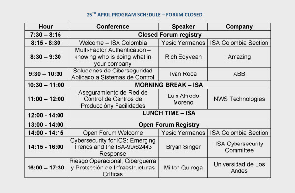

YESID YERMANOS
Presidente
ISA- international Society
of Automation
Colombia Section
BRYAN SINGER
Consultor principal
corporación Kenexis
Copresidente de ISA-99.
MAXIMILIAN KON
Director de Desarrollo
de Secciones
ISA- international Society
of Automation
Distrito 4
MILTON
QUIROGA BECERRA
Magister en Ingeniería de
Sistema de la Universidad
de Los Andes
...................................................................................................................................

ISA -International Society of Automation / ISA Sección Colombia / derechos reservados 2014